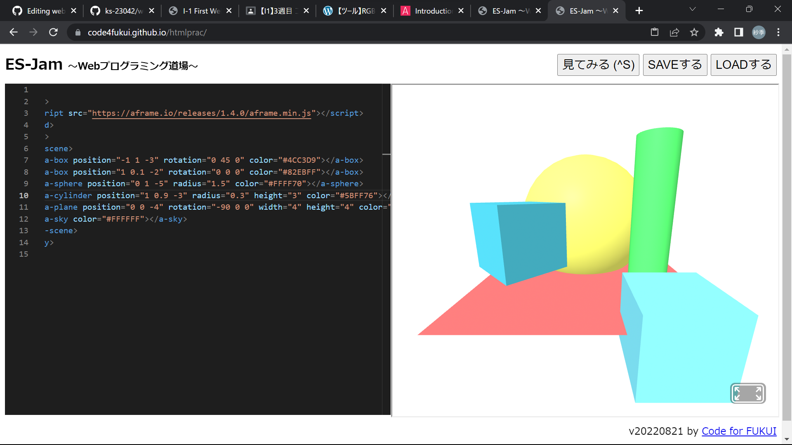
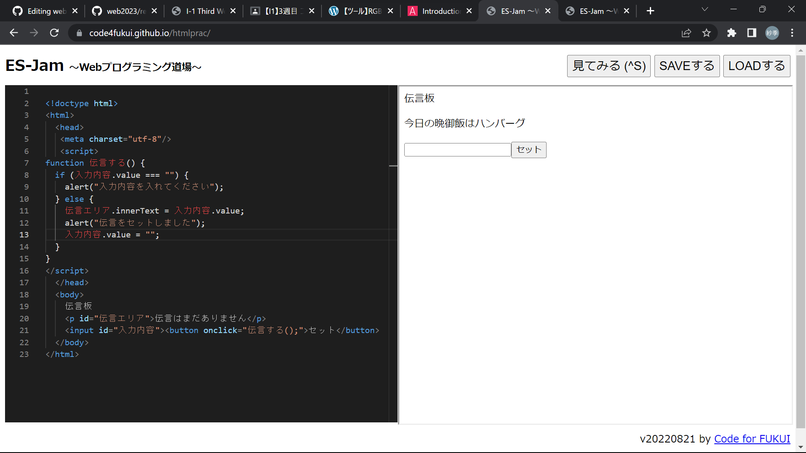

第3週目
3-1 JavaScript体験：VR空間を作る

自作した３次元空間
1.内容
3次元空間をプログラムで作成し、色々とオリジナルの変更をした。
2.感想
物体の色や形や大きさだけでなく、空間の色まで変えることができるなんてすごいと思った。もっとやりこめば、前のVR体験の時の和室のような空間など色々作れそうだと思った。また、丸を動かせるようにしたらボールを使ったゲームなんかも作れそうだと思った。色々な可能性が広がっていて面白かった。br>
3-2 JavaScript体験：伝言プログラムを作る

伝言板
1.内容
伝言を打ち込んだりできるサイトを作成した。
2.感想
実際に押すと動くボタンができたときは嬉しかった。何も打ち込んでいないときは伝言をセットできずにメッセージが表示されるプログラムは少し苦戦したけれど、できたときの達成感があり楽しかった。もう少し改良すればよくある掲示板サイトのようなものも作れそうだと思ったし、作ってみたいと思った。
3-3 JavaScriptプログラムの３次元空間の体験
1.内容
ないようないよう
2.感想
かんそうかんそう